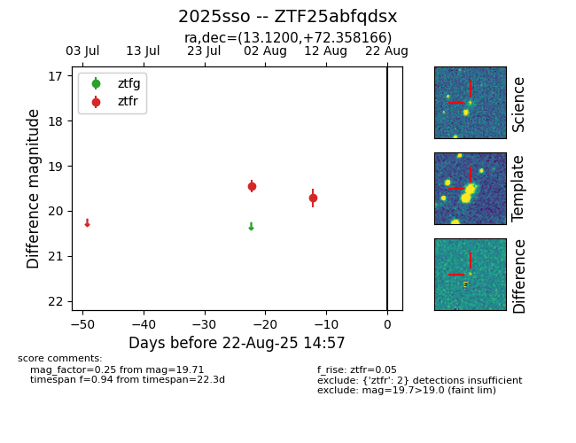

Target 2025sso at 2025-08-21 09:16, see:
FINK: fink-portal.org/ZTF25abfqdsx
Lasair: lasair-ztf.lsst.ac.uk/objects/ZTF25abfqdsx
ALeRCE: alerce.online/object/ZTF25abfqdsx
TNS: wis-tns.org/object/2025sso
YSE: ziggy.ucolick.org/yse/transient_detail/2025sso
alt names
ZTF25abfqdsx (ztf,alerce)
2025sso (tns,yse)
coordinates:
equatorial (ra, dec) = (13.1200,+72.35817)
galactic (l, b) = (123.0120,+9.48658)
photometry
last ztfr=19.71
2 ztfr detections
